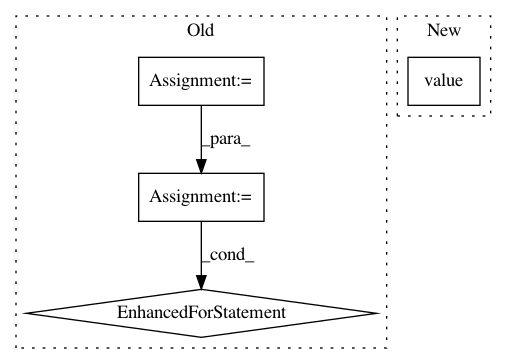

2c6ce0ebfa9537246878e8fb9144e0c879fca17d,cube/models/vocoder.py,BeeCoder,synthesize,#BeeCoder#,68
Before Change
def synthesize(self, mgc, batch_size, sample=True, temperature=1.0):
synth = []
dy.renew_cg()
history = dy.inputVector([127 for x in range(self.HISTORY)])
last_proc = 0
for mgc_index in range(len(mgc)):
curr_proc = int((mgc_index + 1) * 100 / len(mgc))
if curr_proc % 5 == 0 and curr_proc != last_proc:
while last_proc < curr_proc:
last_proc += 5
sys.stdout.write(" " + str(last_proc))
sys.stdout.flush()
pred_probs = self._predict_one(mgc[mgc_index], history, runtime=True)
for output in pred_probs:
synth.append(self._pick_sample(output.npvalue(), temperature=temperature))
hist = synth[-self.HISTORY:]
dy.renew_cg()
history = (dy.inputVector(hist) - 127.0) / 128.0
After Change
[output_real, output_imag] = self._predict_one(mgc[mgc_index], last_fft=last_fft, runtime=True)
last_fft = np.zeros(self.FFT_SIZE, dtype=np.complex)
out_real = output_real.value()
out_imag = output_imag.value()
for ii in range(self.FFT_SIZE):
last_fft[ii] = np.complex(out_real[ii], out_imag[ii])
predicted[mgc_index, ii] = np.complex(out_real[ii], out_imag[ii])
In pattern: SUPERPATTERN
Frequency: 3
Non-data size: 4
Instances
Project Name: tiberiu44/TTS-Cube
Commit Name: 2c6ce0ebfa9537246878e8fb9144e0c879fca17d
Time: 2018-10-22
Author: tibi@racai.ro
File Name: cube/models/vocoder.py
Class Name: BeeCoder
Method Name: synthesize
Project Name: neubig/nn4nlp-code
Commit Name: e2239ff7bb6234e409bf3676acb45b74d8c34e9d
Time: 2017-10-16
Author: hunterhector@gmail.com
File Name: 15-vae/vae-lm.py
Class Name:
Method Name:
Project Name: tiberiu44/TTS-Cube
Commit Name: f1ac81075ac88cf1fb9f701fc1ee78696edd078f
Time: 2018-10-31
Author: boros@adobe.com
File Name: cube/models/vocoder.py
Class Name: BeeCoder
Method Name: synthesize